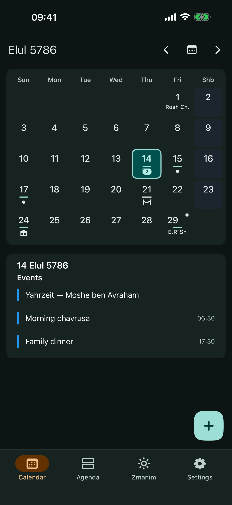
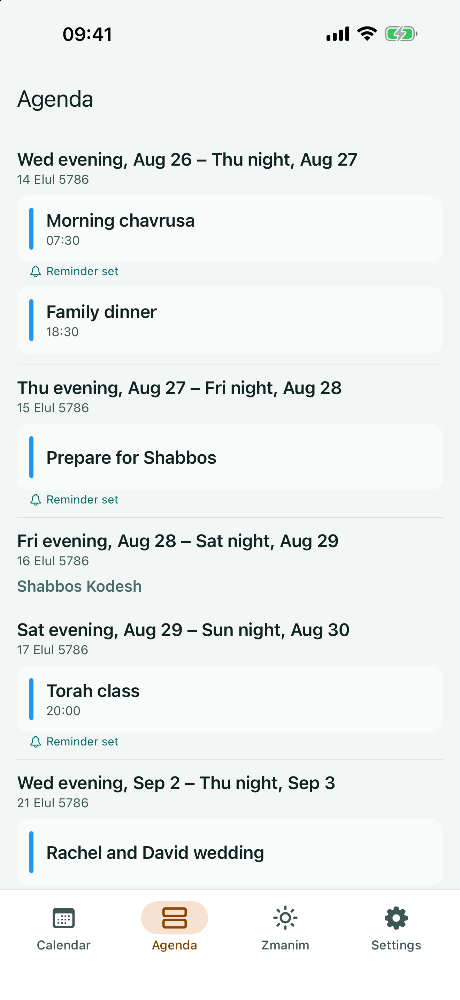
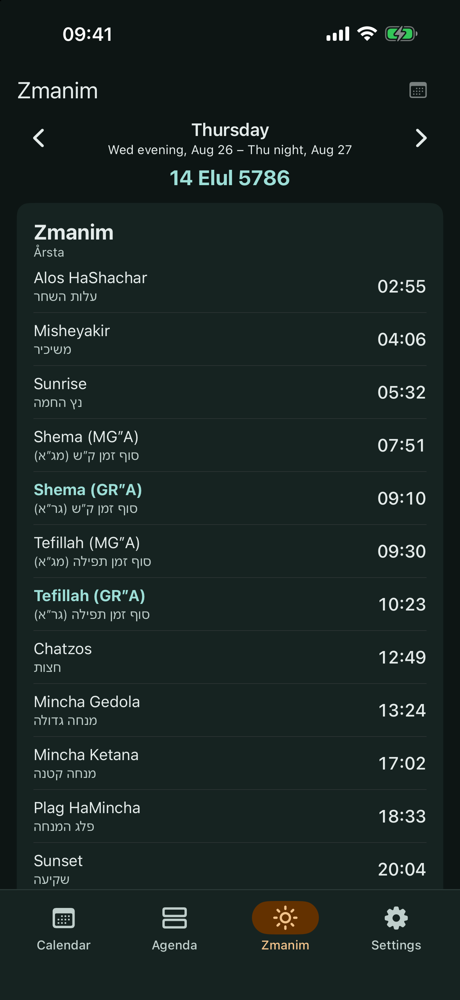

Calendar, Day, and Agenda
Move from a Hebrew month to a rolling 60-day agenda or an exact day, with holidays, Shabbos, parsha, Shabbos Mevarchim, the Omer, Daf Yomi, events, and the full civil-date span.
See today’s Hebrew date and zmanim at a glance. Keep track of yahrzeits and personal events, follow your shul’s luach, and share a calendar with family or friends.

Move from a Hebrew month to a rolling 60-day agenda or an exact day, with holidays, Shabbos, parsha, Shabbos Mevarchim, the Omer, Daf Yomi, events, and the full civil-date span.
See the complete day in order, configure degrees and adjustments, and follow the relevant Kiddush Levana boundaries.
Create yahrzeits, birthdays, anniversaries, wedding days, and personal events with Hebrew or Gregorian recurrence, including Adar and short-month rules.
Choose reminders for events, candle lighting, holidays, fasts, Rosh Chodesh, Mincha, and Maariv. JewCal moves or suppresses them around Shabbos and Yom Tov.
Keep separate calendars, import .jewcal or .ics files, share encrypted exports, or follow an online calendar that refreshes automatically. Read the guides.
Choose automatic or manual location, Israel or the Diaspora, 12- or 24-hour time, and detailed zmanim settings. Choosing Jerusalem during setup starts at 40 minutes; automatic location can ask before switching when you enter or leave.
Convert Gregorian and Hebrew dates, account for after sundown, see the full civil-date span, and create an event on the converted day.
Protect a complete backup of your settings, location, calendars, events, and reminders with a passphrase, then restore it when you need it.
Use JewCal on iPhone, iPad, and Android in English or Hebrew, LTR or RTL. Android also includes calendar and daily-zmanim widgets.
Choose Israel or the Diaspora, set your location, and configure zmanim to match your practice. If you’re unsure which configuration is right for you, ask your rabbi for the proper configuration.



Personal calendars, settings, and saved location are stored on your device. Calendar updates come only from sources you add or enable.